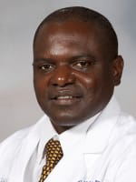

Professor Paul N. Mobit, PhD, MCCPM, DABMP
Founder & Chief Executive Officer
Founder and CEO of Cameroon Oncology Center, Founder and Chairman of the Cameroon Cancer Foundation, and Founder of the African University Institute of Science and Technology. He provides strategic direction across care, research, education and capacity building.
View leadership →